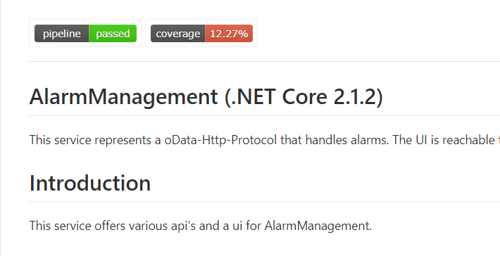
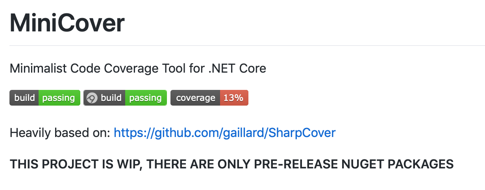
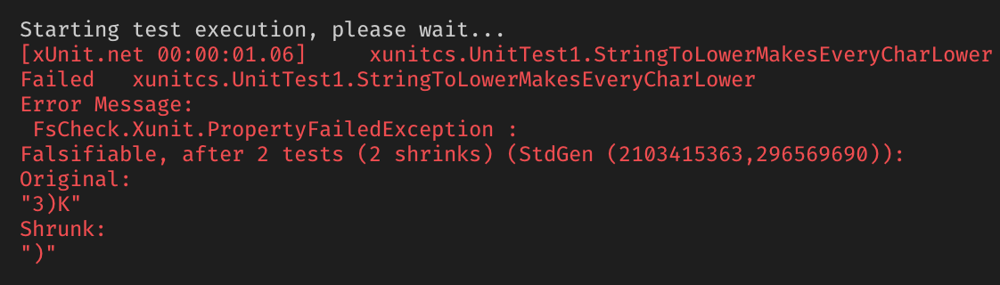

Tests Tests Tests
Test Coverage

Test Coverage

Test Coverage

Test Coverage ~0 %
1: 2: 3: 4: 5: 6: 7: 8: 9: 10: 11: 12: 13: 14: 15: 16: 17: 18: |
|
Test Coverage 100 %
1: 2: 3: 4: 5: 6: 7: 8: 9: 10: 11: 12: 13: 14: 15: 16: |
|
Mehr Tests
1: 2: 3: 4: 5: 6: 7: 8: 9: 10: 11: 12: 13: 14: 15: 16: 17: 18: |
|
Data-driven Tests or Raw tests
1: 2: 3: 4: 5: 6: 7: 8: 9: 10: 11: 12: 13: |
|
Attribute Fact Theory
Data-driven Tests or Raw tests
Schon besser, aber...
- Erlaubt sind nur primitive Typen (
string,int,double, etc.) - Werte müssen vorberechnet werden
- Immer noch Stichproben - nicht alle Werte Abgedeckt
- Test coverage % bleibt groß und ineffektiv
Property-based tests
- Auch genannt: Fuzzy-Tests, Ungenaue Tests
- Kein "Neuland"
- In Haskell seit 1990's QuickCheck
-
Portiert in viele Programmiersprachen
- Python Hypothesis- JS JsVerify
Was sind Properties?
1: 2: 3: 4: 5: 6: |
|
Aber Achtung! ...
C# Properties haben damit nichts zu tun 😀
Property
1: 2: 3: 4: 5: 6: 7: 8: 9: 10: 11: 12: |
|
"Ist die liste sortiert?" - JA/NEIN
Kein Property Test
1: 2: 3: 4: 5: 6: 7: 8: 9: 10: 11: |
|
Nur EINE Stichprobe
Property Test
- Typ parameter bestimmt den gewünschten Eingabetyp
- Generator - generiert zufällige Eingabe, konfigurierbar
- Test - 100 mal, Anzahl konfigurierbar
- Shrink - minimale Fehlerbedinung finden
Property Test Beispiel
1: 2: 3: 4: 5: 6: 7: 8: 9: 10: 11: 12: |
|
zwei verschiedenen Wege zum Ziel:
Property
1: 2: 3: 4: 5: 6: 7: |
|
-
... wenn keine Vorgabe existiert
- Z.B. Serializer, Daten-, Format-Converter, etc.- Eine Schleife bauen- Eingabe und Ausgabe vergleichen
Property
1: 2: 3: 4: 5: 6: 7: |
|
Verhalten abgrenzen - für alle Eingaben keine Exceptions
FsCheck - Testframeworks
1: 2: 3: 4: 5: 6: 7: 8: |
|
- NUnit
- XUnit
- Expecto
- ...
FsCheck - Testausgabe
1: 2: 3: 4: 5: 6: 7: 8: |
|
Ok, passed 100 tests.
63% Smaller than ‚1000‘.
37% Smaller than ‚1000‘, Bigger than ’10‘.
FsCheck.XUnit output
1: 2: 3: 4: 5: 6: 7: 8: 9: 10: 11: 12: 13: 14: 15: 16: |
|
FsCheck Generator
Strings der gewünschten Länge generieren, z.B. für DB-Column
1: 2: 3: 4: 5: 6: 7: 8: 9: 10: 11: 12: 13: |
|
FsCheck Generator
Mehrere Test-Generatoren in einen kombinieren
1: 2: 3: 4: 5: 6: 7: 8: 9: 10: |
|
FsCheck Generator
Eigenen Generator registrieren, z.B. für abgeleitetet Klassen
1: 2: 3: 4: 5: 6: 7: 8: 9: 10: 11: 12: 13: 14: |
|
Property Shrink
1: 2: 3: 4: 5: |
|

Links
- FsCheck - fscheck.github.io/FsCheck/
- Code Beispiele in C# und F#
- Choosing properties
- Diese Folien - vilinski.github.io/presentations/2019/FsCheck
Questions?
|
|
Donald Knuth |